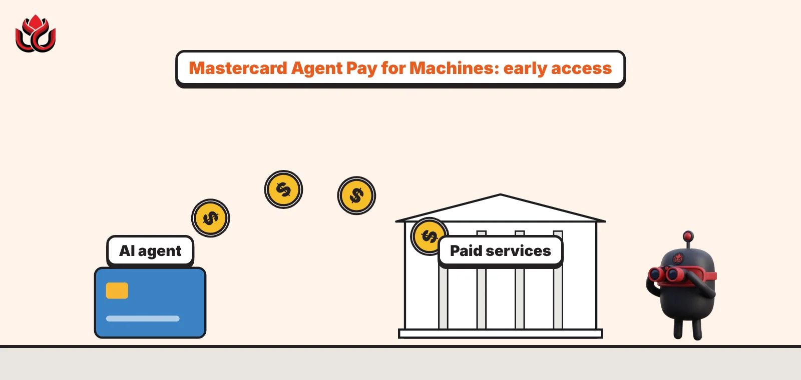
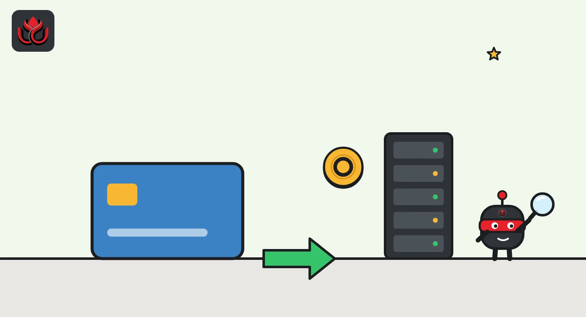

Mastercard lets AI agents pay their own way: nine payments, one budget, no invoices
Mastercard opened early access to Agent Pay for Machines, which lets AI agents buy services on their own within a spending limit set by a human. It runs on the x402 standard and can settle in cash or stablecoins on Base.

Key points
- Mastercard opened early access to Agent Pay for Machines on October 20, 2026, giving developers APIs, a toolkit and a test sandbox.
- In a pilot at Cloudflare Connect, one AI agent made nine payments to two providers under a single approved budget, with no accounts or invoices.
- It runs on x402, uses signed vouchers that are settled later in batches, and can pay out in cash or stablecoins via BVNK, with Base handling on-chain settlement.
What Mastercard opened
Mastercard opened its payment system for AI agents, Agent Pay for Machines, to outside developers on October 20, 2026, the company said. Developers now get the first version of the buyer-side and seller-side APIs, plus a toolkit, a sandbox and developer documentation.
The card network first announced the system in June 2026. The idea: a business gives an AI agent a task and a spending limit, and the agent then finds paid services, accepts their terms and pays them without anyone approving each purchase. Mastercard summed up its view in one line: "Payments aren't the hard part. Authority is."
Mastercard named the pilot partners as Cloudflare, Ant International, AIsa, Base, BVNK, Coinbase and Hype.
The demo: an agent plans a protein bar campaign
Mastercard showed the pilot at Cloudflare Connect. The test customer was Hype, a marketing agency. Hype gave an AI agent a task (plan a sample campaign for a protein bar launch) and a budget. The agent ran on an agent platform such as Amazon Bedrock AgentCore and looked up registered providers.
It came back with a two-step plan: buy social media research from a data provider called AIsa, then buy campaign images through Cloudflare's AI Gateway. Hype approved funding limited to that task and that budget. The services asked for payment through Cloudflare's Monetization Gateway.
In total, the agent made nine payments to two independent merchants. The first paid for the AIsa research and the other eight paid for images. There were no separate accounts, API keys or invoices.
The point is less the payment than the permission behind it. The business sets what the agent may do and how much it may spend, and each payment is checked against that limit.
How the payments work
The system is built on x402, an open protocol named after the little-used HTTP status code 402, "Payment Required." Coinbase created it and contributed it to the Linux Foundation.
Cloudflare's developer documentation describes the basic flow. A client asks for a resource. The server answers with a 402 response and a header listing the price, token, network and merchant address. The client signs a payment and retries. The server checks it, settles, and returns the content with a header confirming settlement. Cloudflare lists supported networks including Base, Ethereum, Solana, Polygon, Arbitrum, Optimism, Stellar and Algorand.
Mastercard adds its own layer on top. When a service returns a 402, the agent creates a digitally signed payment voucher within its approved limit. The provider checks the voucher before delivering. Vouchers are handled off-chain at machine speed, and providers can collect them and redeem them later in batches rather than settling every small payment one by one.
In the pilot, Coinbase Developer Platform supplied the wallet infrastructure that funded the agent, and Base, Coinbase's Ethereum layer 2 network, provided on-chain settlement. BVNK, a stablecoin payments firm, acted as the agent's wallet and used Mastercard's Global Money Platform to handle payment and settlement for both sides, in fiat or stablecoins. Sellers can be paid in the currency, token or rail they prefer.
From June launch to October demo
Mastercard first unveiled Agent Pay for Machines on June 10, 2026, in a release that framed it as a way to handle very large numbers of very small payments, some under a cent, made by AI agents and software. Settlement would run across cards, bank accounts and stablecoins.
The June release named four building blocks. Credentialing gives every agent credentials so it can be recognized across systems. Permissioning lets organizations set rules and spending limits that are enforced in code. The other two cover transacting across providers and multi-rail settlement.
Mastercard said more than 30 partners were involved, listing names such as Coinbase, OKX, Stripe, Adyen, Tempo, Aave Labs, Alchemy, Anchorage Digital, BVNK, MoonPay, Polygon, RippleX, the Solana Foundation, Checkout.com and Cloudflare.
Chief product officer Jorn Lambert pitched it in big terms, saying it would "create the conditions for a superbloom of AI business models." October's release is the first time outside developers can build on it.
Developers who want to try x402 itself can start small. Cloudflare's documentation recommends testing on Base Sepolia, a test network, with free test USDC from Circle's faucet. It describes two payment schemes: "exact" for a fixed price and "upto" for a capped amount that is settled based on use.

Who else backs x402
Mastercard is not alone in backing x402. When the Linux Foundation launched the x402 Foundation on July 14, 2026, it said 40 organizations had joined. Premier members include Mastercard, Visa, American Express, Stripe, Adyen, Fiserv, Google, Amazon Web Services, Cloudflare, Shopify, Coinbase, Circle and MoonPay, plus the Solana, Stellar and Monad foundations and Ripple.
Stellar Development Foundation CEO Denelle Dixon said at the launch that "x402 gives the industry an open, internet-native standard for payments over HTTP."
That list puts card networks and stablecoin issuers behind one standard. For Mastercard, that means agent payments do not have to choose between a card and a token: the same request can end in either.
Timeline
Mastercard announces Agent Pay for Machines
x402 Foundation launches under the Linux Foundation with 40 members
Early access opens; pilot shown at Cloudflare Connect
LC Insight analysis
This section is our reading of the facts above, not a statement of fact.
- We think the batched voucher is the key design choice. Card fees are too high for payments of a fraction of a cent, and settling every API call on-chain adds cost and delay. Vouchers that settle later keep Mastercard in the loop without pricing out tiny payments.
- Stablecoins are likely to become a back-office option inside familiar brands, not something users choose. An agent may pay "with Mastercard" while the money actually moves as stablecoins on Base.
- Human-set spending limits are doing the heavy lifting here. Until it is clear who is liable when an agent overspends or buys the wrong thing, we expect big merchants to stay in pilot mode.
What's next
- Commercial launch date, pricing and country list for Agent Pay for Machines
- Which providers join as sellers beyond the pilot group
- Visa's competing agent payment products
- Volume data for x402 payments on Base
Disclaimer. This article is based on public information and the sources listed below as of the update time shown. It is for information only and is not investment, legal or tax advice. Figures may change as companies and authorities publish new data.